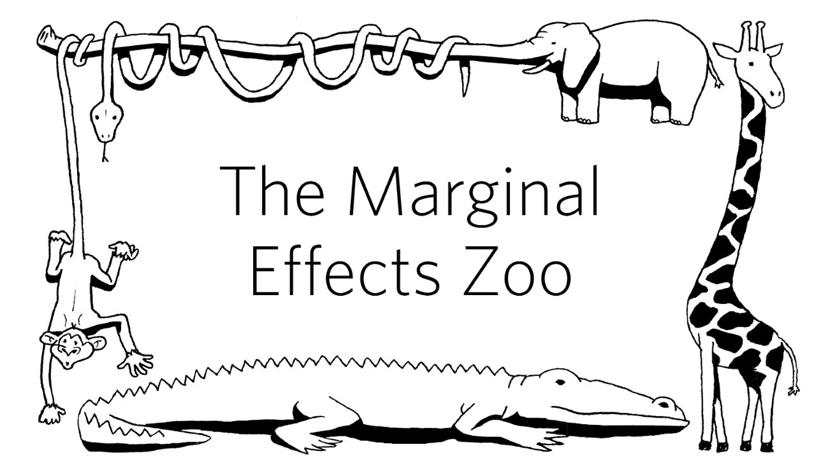
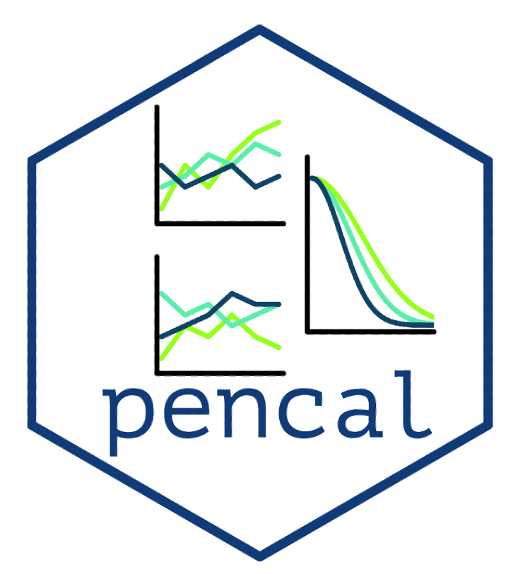
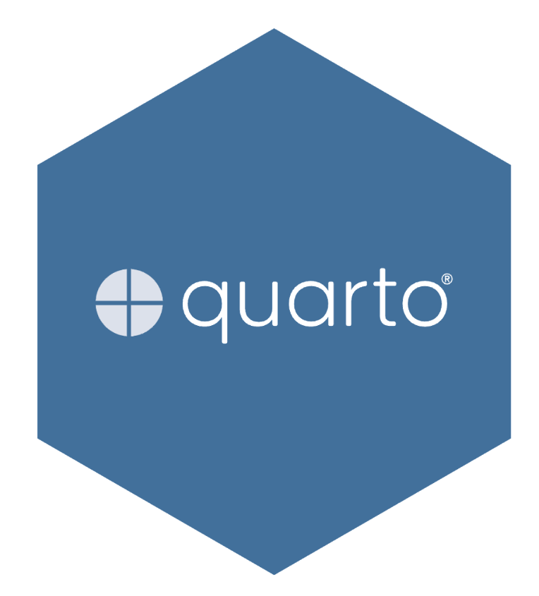
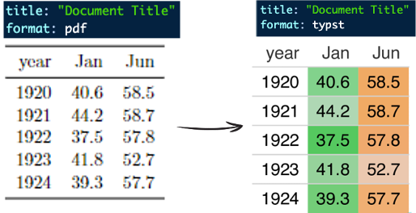
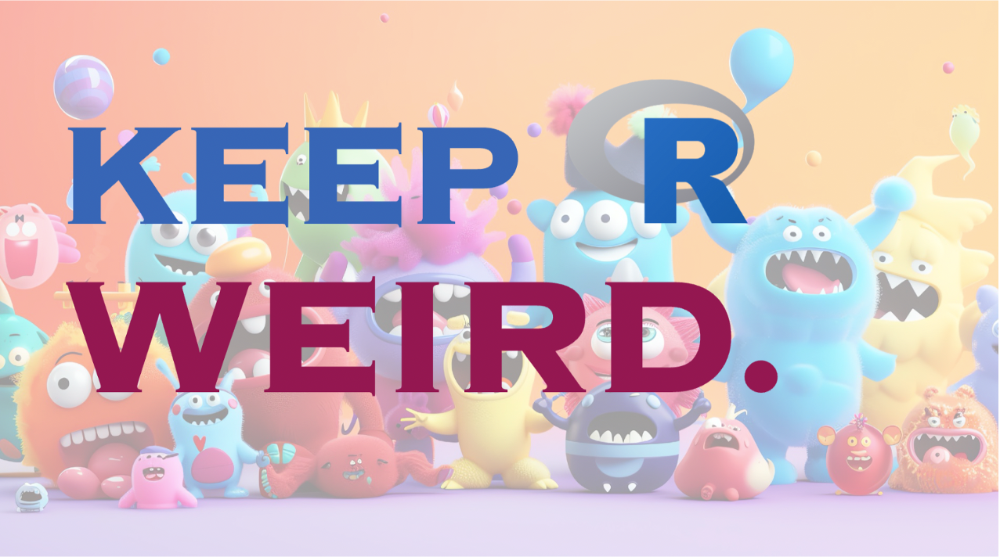
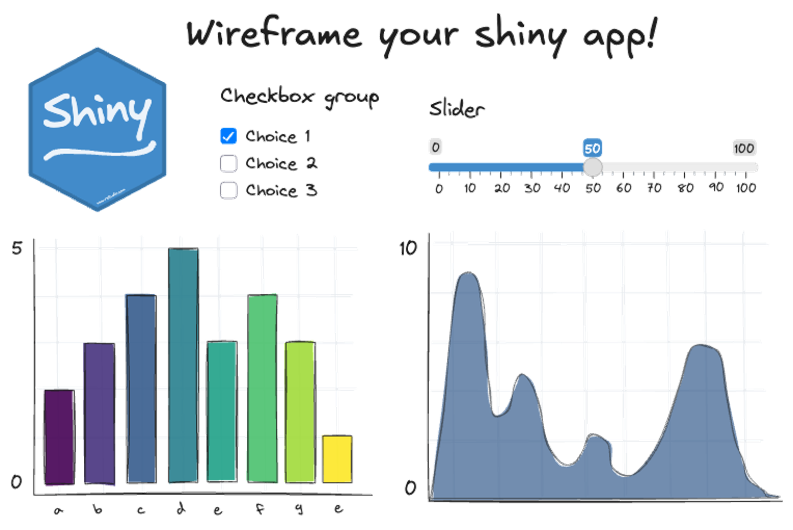

The useR! conference series is the conference for R enthusiasts. This annual event fosters a vibrant and diverse community where data scientists, statisticians, and developers can network, learn, and contribute to the growing ecosystem of R. This years event was hold in Salzburg, Austria, the home of Mozart.
The conference was filled with many inspiring talks, and many things to take home, below are just a few snapshots of some of my personal highlights and take home messages. The program also encompassed one day of half-day workshops (see former blog post on useR! workshops), where I grabbed the opportunity learn more about Data Anonymization for Open Science Data and, in the afternoon, running survival analyses using tidymodels.
useR! 2024 · Talks
Interpret Statistical Models Using the marginaleffects Package · Vincent Arel-Bundock, Université de Montréal
This marginaleffects package offers a great range of tools that help make raw parameter estimates easier to understand, and more interpretable. Rather than getting lost in technical jargon, these functions help bridge the gap between statistical output and real-world application.
In general, I believe marginal effects are underutilized, and should be used more often also in scientific publications. They provide clear insights into how variables impact outcomes, making them essential for more transparent and actionable research findings. A very helpful beginners guide can be found here.
I also wrote a blog post on marginal effects using the marginaleffects package: see here.

Dynamic Prediction with Numerous Longitudinal Covariates · Mirko Signorelli, Leiden University

Quarto - Elevating R Markdown for Advanced Publishing · Christophe Dervieux, Posit PBC
I was excited to discover some of the latest features of quarto, here are a few of the highlights that caught my attention:
New PDF Output with Typst: Quarto now supports PDF rendering through Typst, an exciting new open-source typesetting system. Typst blends the best features of LaTeX, Google Docs, and Word, allowing users to create stunning reports, especially in scientific contexts.
Quarto Extensions: I experimented with the fancy-text extension, which enables fun formatting options, like a stylish written version of LaTeX, typing
{{ < latex > }}results in \(\LaTeX\). It’s a small but neat way to add flair to your content.Quarto Dashboards: With Quarto Dashboards, creating interactive, data-driven dashboards has never been easier.


Keep R Weird · Kelly Bodwin, Cal Poly State University

Fantastic keynote by Kelly Bodwin. She encouraged the community to “Keep R Weird,” highlighting how the language thrives on creativity and inclusivity. R is not just a tool but a vibrant community, driven by passion and collaboration. Check out the slides and watch the recording of the talk — it’s definitely worthwhile!
Shinydraw: Quickly wireframe Shiny apps in Excalidraw · Mike Page, cynkra
In this lightning talk, I got to know about Excalidraw, which is an open-source, web-based tool for creating collaborative, hand-drawn-like diagrams and sketches. It is designed to be simple and intuitive, allowing users to create quick, informal drawings that resemble sketches made on a whiteboard or paper. The tool is especially popular among developers, educators, and designers for its minimalistic approach and ease of use.
Michael has developed an Excalidraw library named shinydraw, which provides ready-to-use sketches of Shiny components. This library makes it easy to prototype Shiny apps with minimal effort. To get started, visit his shinydraw GitHub page.
Find the slides of the talk here. All slides are done using Excalidraw.

How your code might get rusty, and what you can do about this · Maëlle Salmon, rOpenSicence & cynkra
So what can you do? tips I am taking home:
- Have tests! Tip: the covr package for R allows to measure code coverage in R projects. It provides tools to assess how much of your R code is being exected during testing, helping you identify untested code and improve test coverage.
- Get rid of “owwies”, step by step, easiest first (i.e. bad naming, overly complicated logic)
- Use tools which help you improve your code, such as styler or lintr
- Code reviews, see Tidyteam code review principles or The code review anxiety workbook
- Git, git, git! Small commits with informative messages! see Blog post, but also the saperlipopette package, which is developed to accompany https://ohshitgit.com/.
Find the slides of the presentation here. Some of the things mentioned in the talk and many more interesting content can be found on Maëlle’s website. Browsing through her blog posts was very inspiring and not only made my list of good intentions for my coding projects much longer, but also enriched my list of books I wanna read (e.g. The programmer’s Brain).
R in the Age of LLMs: Redefining the Role of Programming and Analysis · Hilary Parker, Stoneway Data
Unfortunately, I missed Hilary Parker’s keynote, which I heard was a very visionary and polarising talk. However, I got to hear her thoughts on the topic through her podcast, NOT SO STANDARD DEVIATIONS, which she co-hosts with Roger Peng.